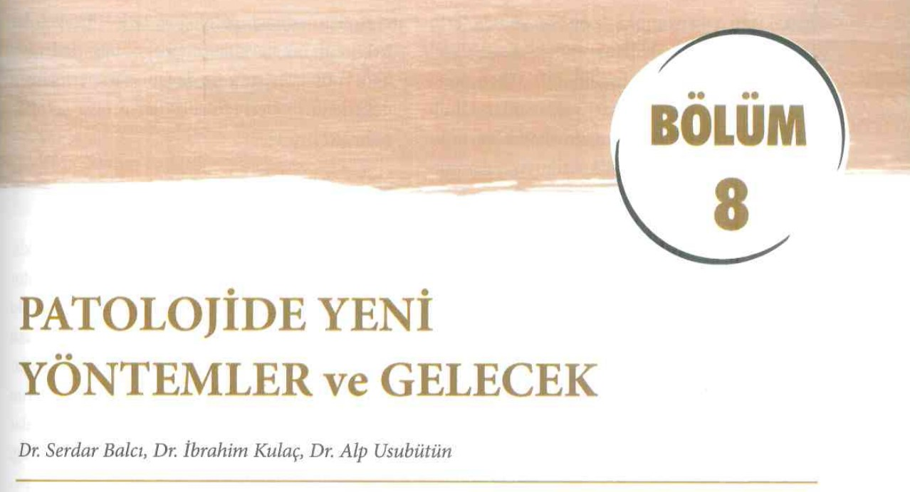

Patoloji ve Bilişim
Serdar Balcı 2024-02-16
Patoloji ve Bilişim

https://zenodo.org/badge/latestdoi/594820002
Bu yazı Prof. Dr. Alp Usubütün editörlüğünde hazırlanan “Sağlık Bilimleri İçin Patoloji ve Patoloji Laboratuvarını Anlama Kılavuzu 2. Baskı - Ekim 2022 Ankara Nobel Tıp Kitabevleri ISBN: 978-625-7564-70-0” 1 2 adlı kitaptaki “8. Bölüm: Patolojide Yeni Yöntemler ve Gelecek”3 için hazırlanmıştı r. Ancak bu alanın çok hızlı ilerlemesi nedeniyle bu metni güncel tutmak (ve bir sonraki baskı için gerekirse hazır bulunmak için) metin içeriği burada güncellenecekti r. Doç. Dr. Serdar Balcı

Patolojide Bilişimin yeri nedir?
Patologları, hastanın klinik bilgilerini, makroskopi ve mikroskopik görüntüler ile işleyip, literatür ve bilimsel bilgiler ışığında yorumlayan ve rapor adlı yazılı bilgiyi üreten bilgi uzmanları olarak tanımlayabiliriz. Abartılı bir tarif gibi görünse de çoğu hasta dosyasında, hasta hakkında en çok ve en doğru (hatta hala daha altın standart) bilgiler patologların ürettiği patoloji raporlarında yer almaktadır.
Bilginin teknoloji kullanılarak işlenmesindeki gelişmeleri, patoloji disiplini, bazen geriden bazen öncü olarak, ama emin adımlarla takip etmekte ve kendi işleyişine katmaktadır. (Computational Pathology: A Path Ahead https://pubmed.ncbi.nlm.nih.gov/26098131/)
- Bilimsel bilginin sürekli artması,
- hemen her yıl yeni bir DSÖ sınıflama kitabının çıkması,
- yeni çıkan antikorların ve yöntemlerin tanısal test olarak kullanımındaki istatistiksel yöntemler,
- tümörlerin taksonomisi,
- “ben buna displazi derim” gibi sezgisel yaklaşımlar,
- klinik bilgilerin elde edilmesi,
- makroskopik ve mikroskopik görüntülerin elde edilmesi, işlenmesi ve saklanması,
- rapor yazılması,
- diktasyon,
- raporların saklanması,
- arşivleme,
- laboratuvar iş akışının düzenlenmesi ve takibi
gibi bir çok basamakta yer alan bilişim teknolojileri, dijital patolojinin yaygınlaşması ile makina öğrenmesi, derin öğrenme ve yapay zeka ile karar destek sistemleri olarak günlük pratiğe daha da girmektedir.
Patoloji raporları ve görüntüleri için kullanılan yazılımlar (Rosai 1. chapter)’da belirtildiği gibi çoğu zaman diğer laboratuvar branşları ya da radyoloji için hazırlanmış platformlara eklemlenmiş gibidirler. Patolojinin işleyişi ile çoğu zaman örtüşmeyen yazılımlar, çoğu zaman bir metin işlemcisi ve faturalandırma aracı olarak kalmaktadırlar.

Patolojideki Bilgi Türleri Nelerdir?
Patolojide bilgi türleri temel olarak laboratuvar iş akışı, metin ve görüntülerden oluşmaktadır.
Laboratuvar İş Akışı
Metin Bilgileri
Patolojideki metin bilgilerini:
- patoloğa
- klinikten ve
- literatürden gelen bilgiler ile
- patoloğun ürettiği raporlar oluşturmaktadır.
Bu bilgi türlerine belki sosyal medyayı da eklemek uygun olacaktır.
Sosyal medyada paylaşılan rutin ya da ilginç patoloji vakaları
derlendiğinde bir patoloji kitabı oluşturmak mümkün olabilir 4.
Ayrıca bu veriler görüntü analizleri için bile kullanılabilmektedir
PMID:37592105.
Görüntüler
Morfolojik analize dayanan anatomik patolojideki bilgilerden biri de görüntülerdir. Makroskopik ve mikroskopik görüntüler mevcuttur.
“Makroskopik” görüntülerin net bir şekilde elde edilmesi ve saklanması giderek önem kazanmaktadır. Tariflenen bazı bulguların (mezorektal bütünlük gibi) daha sonra tekrar değerlendirilmesi, delici kesici yaralanmalar gibi mikroskopla belirlenemeyecek medikolegal dökümantasyonun sağlanması gibi nedenlerle, patoloji ve hastane bilgi sistemlerine entegre makroskopi resim saklama gerekliliği giderek artmaktadır.
Makroskopik görüntülerin radyoloji ile korelasyonu ve üç boyutlu görüntülerle sanal gerçeklik uygulamaları makroskopik görüntü arşivinin önemini giderek artırmaktadır.
“Mikroskopik” görüntülerin tam yüzey taranması (whole slide imaging) ile hızlanan dijital patolojiye bir sonraki bölümde detaylı değinilecektir. Artık günümüzde;
- dokunun kesit almadan üç boyutlu haritalandırılması,
- fiziksel olarak boyanmadan sanal boyalar ile incelenmesi
- ve bunların örnek yeterliliğinde ve hızlı tanıda kullanılması oldukça sık yapılan ve pratiğe geçeceği umulan çalışmalardır.
İki boyutlu klasik mikroskopik görüntülerin çokça kesit alınarak 3 boyutlu (3D) rekonstriksiyonu ile yapılan tümör modelleri, hastalıkların patofizyolojisinin anlaşılmasında yeni olanaklar sunacaktır.
Patolojinin gelecegindeki yeni teknikler arasında
- üç boyutlu görüntüleme 5,
- Raman spektroskopisi (Movahed-Ezazi vd. 2023),
- FTIR (infrared spectroskop),
- sanal HE boyama,
- ve konfokal mikroskopi gibi tekniklerin yer alması beklenmektedir.
Dijital Patoloji Nedir?
Dijital Patolojinin Kullanım Alanları Nelerdir?
Tanı
Eğitim
Konsültasyon
Rutin Raporlama {rutin-raporlama}
Şu an kullanılan ara yüzlerdeki farklılıklar da kullanım alışkanlığı geliştirmeyi zorlaştırmaktadır.
<–WIP–>
Bilgisayar fare orta tuş kilidi olan ve olmayan arayüzler (https://middleclick.app/), büyütme ve küçültme (zoom in/out) hızlarının klasik mikroskoplardan farklı olması yanısıra klavye ve bilgisayar bileşenlerine (oyunlara) aşina neslin kullandığı oklar,
aswdtuşlarının …navigasyon ok tuşları, aswdrz, +- middle click scroll resim, görüntü kaydetme
Sectra, ViraSoft ve OpenSeaDragon arayüzlerindeki farklılıklar.
<–WIP–>
Nasıl bir ekran kullanılacağı ve ekranın “tıbbi ekran” kategorisinde olup olmaması gerektiği de süregiden bir tartışma konusudur (Bkz. Leeds ekran testi)
<–WIP–>
Tek ya da çoklu monitörde çalışma, dokunmatik ekranlar
ekran çözünürlüğü, tepki süresi
sanal mape çeşitleri
lamın vertikal ya da horizontal taranması
taranan alanların işaretlenmesi (heatmap)
<–WIP–>
Günümüzde kaset, immünohistokimya ve tayarıcılardaki farklı barkod / karekod / datamatrix kullanımı ve bu içeriğin firmalara özgün ve değiştirilemez olarak tanımlanması, kesintisiz bir laboratuvar iş akışı önündeki önemli engellerden biridir. Bu konuda firmalar arası entegrasyonun sağlanabilmesi oldukça önemlidir. Yakın zamanda Memorial Patoloji’de tüm basamaklardaki datamatrix kodları birleştirilmiş olup, immünohistokimya cihazındaki entegrasyon da tamamlanmak üzeredir.
Dijital Patoloji İçin Tarayıcıya İhtiyacımız Var Mı?
Dijital Patolojinin Geleceği
Dijital patoloji hızla gelişen bir alan olduğundan patologların kendilerini bu gelişmelere hazırlamaları gerekmektedir.
Altyapı yatırımları sırasında geliştirilebilir modüler yapıların tercih edilmesi; basit ekran paylaşımından öteye gitmeyen ve açık kaynak ile ulaşılabilecek programlar için masraf yapmadan önce yetkin görüş alınması önerilmektedir.
Dijital patoloji görüntüleri şu an farklı firmalara ait farklı formatlar halindedir. Ancak yakın zamanda ortak bir format olan DICOM’a geçilmesi ile cihazlar arasındaki uyum da artacaktır. Bu ortak formata geçilmesi ile görüntülerin daha uygun saklanabilmesi için de geliştirmeler hızlanacaktır.
Dijital patoloji sadece mikroskopik görüntülerin bilgisayar ortamına aktarılması olarak düşünülmemeli. Dijital patoloji ile tüm patolojide üretilen tüm bilginin kullanılabilir veri haline getirilmesi ve bunların hastanın diğer bilgileri ile entegre edilmesi hedeflenmelidir.
Yöneticilerin dijital patoloji kurulum hevesleri sırasında, patologlar fırsatı ganimet bilip laboratuvarın eksiklerini tamamlatmalı ve kaliteyi artırıcı düzenlemeleri uygulatmalıdırlar.
Yeni çıkan immünohistokimyasal tetkiklerin belli bir süre sonra tanısal özgünlüklerini kaybetmeleri patologları yeni testlere karşı şüpheli yaklaşmaya zorlamıştır. Aynı şüpheyi yapay zeka algoritmaları için de kullanmak gereklidir. Yakın zamanda çok sayıda başarılı olduğu iddia edilen algoritma yayınlanmış olmasına karşın bunların kliniğe aktarımı hala kısıtlıdır. Yayın ve araştırma bolluğu ile birlikte; yapay zeka modellerinin aynı laboratuvardaki tekrarlanabilirlikleri ve başka laboratuvar verilerine aktarılabilirlikleri çok önemli bir problem olarak ortaya çıkmaya başlamıştır.
Patoloji asistanları açık kaynak kodlu dijital patoloji programlarını kullanmayı öğrenmeli ve açık kaynak kodlu yazılımlar konusunda dijital okur yazarlıklarını geliştirmelidirler.
Meslek örgütleri radyolojide yaşanan “hizmet alımı” süreci ile “uzaktan tanı” adı altında düşürülen sağlık hizmeti kalitesi ve değersizleştirilen hekim emeğinin farkında olmalı ve buna yönelik tedbir ve tavsiyeler için hazırlanmalıdırlar.
Tarayıcıların, PACS depolarının ve arayüzlerin birbiri ile uyumu oldukça önemlidir. ICC profillerinin 6 7 uyumu görüntülerin son kullanıcı olan patolog tarafından değerlendirmesinde önem taşımaktadır .
Yapay zeka algoritma sağlayıcılarının, laboratuvarda hali hazırda bulunan PACS ve arayüz ile uyum sağlayamaması ve entegrasyon için ayrı emek ve maliyet gerekmesi de dijital patolojinin gelişimindeki engellerdendir.
Üretilen yapay zeka algoritmaları firmaların sadece kendi arayüzlerinde ve bulut sistemlerinde çalışmaktadır. Bu sistemler “vendor agnostic” hale henüz gelememişlerdir.
Yapay Zekanın Dijital Patolojideki Yeri
Yapay zekanın görüntüler üzerindeki tecrübesinin patolojiye aktarılması ile bilimsel çalışmalarda sık görmeye başladığımız yapay zeka (makina öğrenmesi, derin öğrenme) kullanımı giderek günlük pratiğe de uygulanabilecek özellikler kazanmaktadır. Yapay zeka ile ilgili çalışmalar literatürde hesaplamalı/sayısal patoloji (computational pathology), matematiksel patoloji olarak da geçmektedir.
Yapay zeka ile ilgili beklentilerin realist olması, algoritmaların ise
- tekrarlanabilir (kendi içinde ve dışarıyla tutarlı),
- teknik olarak uygulanabilir,
- klinik pratiğe aktarılabilir ve
- yeni bilgiler ışığında güncellenebilir olması gerekmektedir.
Yapay zeka modellerinin nasıl geliştirildiği oldukça önemlidir.
TCGA verisinde hatalar olduğu (Murat 2024 USCAP abstract)
Doku bulaşlarının model başarılarını etkilediği Irmakci vd. (2024)
unutulmamalıdır.
Gelecekte her mikroskopta bir kameranın olduğu, masabaşında hemen ulaşılabilecek tarama cihazlarının olduğu çalışma ortamı yanısıra, tamamen mikroskopsuz patoloji iş istasyonları da olacaktır.
Algoritma destekli patoloji pratiğinde ‘Bu vakayı Alp Hoca’ya danışalım’ yerine ‘Bu vakayı AlpApp v25’e yükleyelim’ gibi cümleler yer alacağı gibi, ihtiyaca göre uygulama indirilen / geliştirilen PathAppStore’ları da hayatımızdaki yeniliklerden olacaktır.
Tüm bu gelişmeler ışığında gelecekte, bilişimin, metin-görüntü işleme ve yapay zekanın patoloji bölümleri içinde bir alt grup olarak yerleşeceğini ve patoloji laboratuvarlarında bilişim sektöründen de çalışanlar olacağı tahmin edilmektedir.
İlginç ve örnek çalışmalar
QuPath
QuPath’ın WSinfer adlı eklentisi ile literatürdeki yapay zeka modellerini kendi vakalarımızda kolayca uygulamak mümkün. 8
I am really enthusiastic about the #wsinfer plugin of #qupath Now it will be possible to try published models of digital pathology on my cases without having to find data or code “upon reasonable request”, or try correct the corrupt code on github. And now the “published models” will face the real world scenario. This will change the #digitalpathology and distinguish those models that really work from those that work only on the paper. There is one great barrier remaining now, an open source program to make #WSI with a camera attached to a microscope. I wish I had the coding skills to do that :)
Gelecekte oldukça fazla QuPath kullanacağımızın bir göstergesi de Apple
bilgisayar sunumlarında QuPath’ın örnek olarak yerini almasıdır.
https://www.linkedin.com/feed/update/urn:li:activity:7125049439831916544/
https://youtube.com/clip/UgkxMxu0lmNg-9TeX7W59sJXa1dm6nqysu6N?si=4uuz7qVoWqAhYuGp
HistoQC
Octopi
OpenFlexure Microscope {sec-openflexure-microscope}
https://openflexure.org/projects/microscope/
PATHOLOGY RESIDENT EXPERIENCE USING A LOW-COST 3D PRINTED MICROSCOPE FOR PORTABLE DIGITAL PATHOLOGY https://doi.org/10.1016/j.jpi.2022.100043
µManager {sec-micromanager}
Open Source Software for Control and Automation of Microscope Hardware 9
Diğer açık kaynak kodlu ve ücretsiz programların listesi okuma önerilerinde verilmiştir.
Referanslar ve okuma Önerileri
Referanslar
Okuma önerileri:
- European Society for Digital and Integrative Pathology https://digitalpathologysociety.org/
- Digital Pathology Association https://digitalpathologyassociation.org/
- empaia Academy https://en.empaia.org/academy-2-1
- Patoloji Atlası https://www.patolojiatlasi.com/
- Histopathology Atlas https://www.histopathologyatlas.com/
- Patoloji Notları https://www.patolojinotlari.com/
- QuPath https://qupath.github.io/ Bankhead, P. et al. QuPath: Open source software for digital pathology image analysis. Scientific Reports (2017). https://doi.org/10.1038/s41598-017-17204-5
- Pete Bankhead, 2022, Introduction to Bioimage Analysis https://bioimagebook.github.io
- Best practice recommendations for implementing digital pathology, The Royal College of Pathologists https://www.rcpath.org/uploads/assets/f465d1b3-797b-4297-b7fedc00b4d77e51/Best-practice-recommendations-for-implementing-digital-pathology.pdf
- The Leeds Guide to Digital Pathology https://www.virtualpathology.leeds.ac.uk/research/clinical/docs/2018/pdfs/18778_Leeds%20Guide%20to%20Digital%20Pathology_Brochure_A4_final_hi.pdf
- Leeds ekran testi: https://www.virtualpathology.leeds.ac.uk/research/systems/pouqa/pathology/
- Integrating digital pathology into clinical practice https://pubmed.ncbi.nlm.nih.gov/34599281/
- Artificial intelligence-the third revolution in pathology https://pubmed.ncbi.nlm.nih.gov/30270453/
- Grand Challenge A platform for end-to-end development of machine learning solutions in biomedical imaging. https://grand-challenge.org/
- Manual Whole Slide Imaging https://www.microvisioneer.com/
- PathoZoom Scan https://www.smartinmedia.com/pathozoom-scan/
- Pallua JD, Brunner A, Zelger B, Schirmer M, Haybaeck J. The future of pathology is digital Pathol Res Pract. 2020 Sep;216(9):153040. doi: 10.1016/j.prp.2020.153040. Epub 2020 Jun 20. PMID: 32825928.
- Petascale Computational Pathology - Prof Nasir Rajpoot at HMS-BWH Pathology Grand Rounds 5 Oct 2020 https://www.youtube.com/watch?v=nVHRNn-nqMg
- Advice from one of the world’s largest digital pathology implementations https://medical.sectra.com/case/advice-from-one-of-the-worlds-largest-digital-pathology-implementations/
- Octopi: Octopi: Open configurable high-throughput imaging platform for infectious disease diagnosis in the field Hongquan Li, Hazel Soto-Montoya, Maxime Voisin, Lucas Fuentes Valenzuela, Manu Prakash bioRxiv 684423; doi: https://doi.org/10.1101/684423
- Octopi’nin tanıtımı: https://twitter.com/prakashlab/status/1144453714637230083
- Lesson from the COVID-19 pandemic: pathologists need to build their confidence on working in a digital microscopy environment. Virchows Arch 479, 227–229 (2021). https://doi.org/10.1007/s00428-021-03123-4
- Validating Whole Slide Imaging for Diagnostic Purposes in Pathology https://www.cap.org/protocols-and-guidelines/cap-guidelines/current-cap-guidelines/validating-whole-slide-imaging-for-diagnostic-purposes-in-pathology
- Validating Whole Slide Imaging Systems for Diagnostic Purposes in Pathology: Guideline Update From the College of American Pathologists in Collaboration With the American Society for Clinical Pathology and the Association for Pathology Informatics. Arch Pathol Lab Med 1 April 2022; 146 (4): 440–450. doi: https://doi.org/10.5858/arpa.2020-0723-CP
- Digital Pathology & AI in routine clinical practice:From quality control to primary cancer diagnosis https://www.youtube.com/watch?v=7pRmonus9iM
- Atallah, N.M., Toss, M.S., Verrill, C. et al. Potential quality pitfalls of digitalized whole slide image of breast pathology in routine practice. Mod Pathol (2021). https://doi.org/10.1038/s41379-021-01000-8
Açık kaynak kodlu veya ücretsiz dijital patoloji programları:
- QuickAnnotator https://github.com/choosehappy/QuickAnnotator
- HistoQC https://github.com/choosehappy/HistoQC
- QuPath https://qupath.github.io/
- Cytomine https://cytomine.be/
- Orbit https://www.orbit.bio/
- ASAP https://computationalpathologygroup.github.io/ASAP/
- Micaia http://www.micaia.ai
- ImageJ/ Fiji https://fiji.sc/
- ImageScope https://www.leicabiosystems.com/digital-pathology/manage/aperio-imagescope/
Videolar
QuPath
Proje Oluşturma
{{ video https://www.youtube.com/embed/wo9vZccmqwc title=“QuPath projects” }}
Renkleri Ayırma
{{ video https://www.youtube.com/embed/Oe0rfzLtTO0 }}
{{ video https://www.youtube.com/embed/IpCDnPnFvDc }}
Dokuların Tespiti
{{ video https://www.youtube.com/embed/B03-TlH-yVU }}
Segment Anything
{{ video https://www.youtube.com/embed/J_ubK5x1vcU }}
wsinfer
{{ video https://www.youtube.com/embed/0Z589zWlFQQ }}
↩︎
AI-driven efficient patient prognosis based on 3D pathology samples TIA Centre Seminar Series Dr. Andrew Song https://mamba-demo.github.io/demo/ https://www.youtube.com/watch?v=rcNCHQnK454&ab_channel=TIAWarwick↩︎
http://www.andrewjanowczyk.com/application-of-icc-profiles-to-digital-pathology-images/↩︎
preprint documentation-1 documentation-2 image.sc linkedIN↩︎
-
↩︎